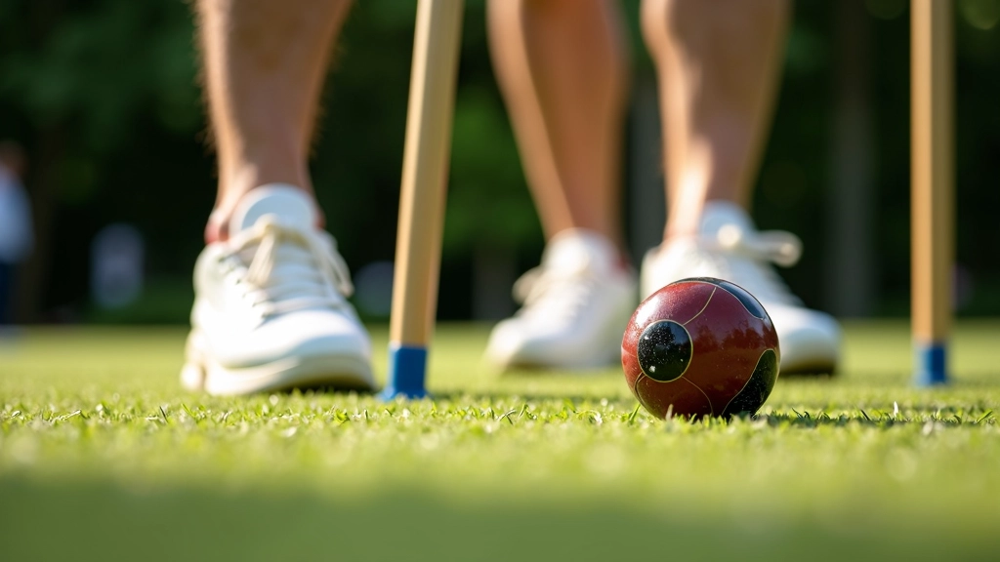
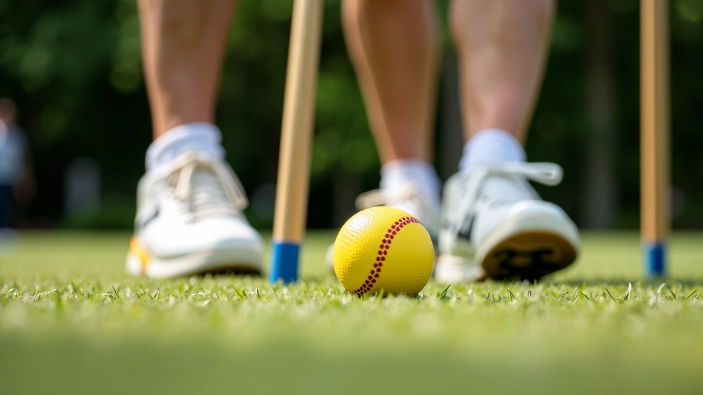
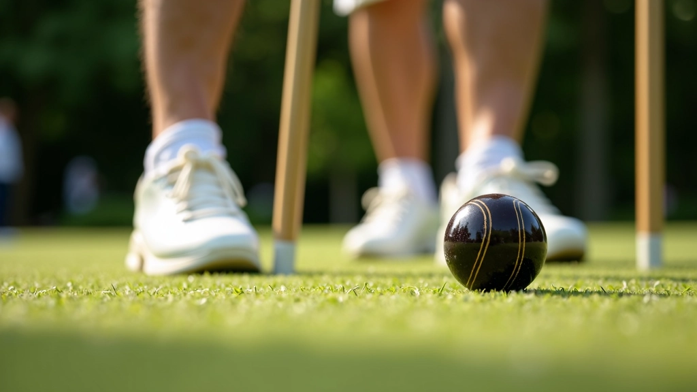

لماذا نظام الإشارات ضروري جداً؟
في الكروكيه الثنائي، الفوز ليس عن اللاعب الواحد — إنه عن الشراكة. عندما تلعب مع شريك، يجب أن تكون على نفس الموجة. الإشارات الواضحة هي الفرق بين لعبة متناسقة وفوضى على الملعب. نحن نتحدث عن إشارات يد بسيطة، تلميحات بالرأس، حتى نظرات سريعة — كل هذا يعمل معاً لتكوين نظام تواصل يمنحك الميزة.
الشيء المهم هو أن تكون هذه الإشارات واضحة وثابتة. لا تريد أن تقضي المباراة وأنت تحاول فهم ما يقصده شريكك. يجب أن تكون الرسالة مباشرة: هل ننتقل للموقع الدفاعي؟ هل نركز على الهدف؟ هل نغير الاستراتيجية؟ إذا كانت الإشارات محددة وسهلة الفهم، فإن التنسيق يتحسن بشكل كبير.
أنواع الإشارات الأساسية
هناك ثلاثة أنواع رئيسية من الإشارات التي يجب أن تتقنها أنت وشريكك:
إشارات الموقع
تخبر شريكك بالمكان الذي يجب أن يكون فيه على الملعب. مثلاً، رفع الإصبع لليمين يعني الاقتراب من الحدود اليمنى، أو إشارة بالكتف تعني البقاء بالقرب من الهدف.
إشارات الاستراتيجية
تشير إلى النوع التالي من اللعب. قد تكون إشارة بقبضة اليد تعني الهجوم، أو حركة بطيئة بالرأس تعني التحضير للدفاع. كل فريق يطور رموزه الخاصة.
إشارات التحذير
التنبيهات السريعة. نقرة على الأرض بالعصا تعني حذر من الخصم، أو صوت معين يعني استرجاع التركيز. هذه الإشارات تنقذك في اللحظات الحرجة.

معلومة مهمة
هذا الدليل يقدم معلومات تعليمية عن نظام الإشارات في الكروكيه الثنائي. الممارسة العملية والتدريب المنتظم مع شريكك ستساعد على إتقان هذه المهارات بشكل أفضل. تذكر أن كل فريق قد يطور نظام إشاراته الخاص بناءً على احتياجاته وأسلوب لعبه.

كيف تطور نظامك الخاص
الخطوة الأولى هي الاجتماع مع شريكك وتحديد الإشارات التي تشعر بالراحة معها. لا تحاول نقل نظام من فريق آخر — يجب أن يكون طبيعياً لك ولشريكك. ابدأ بـ 5-6 إشارات أساسية فقط. لا تريد أن تثقل الأمر على نفسك.
بعد تحديد الإشارات، مارسها خارج الملعب أولاً. اجلس مع شريكك وتحدثا عن كل إشارة بوضوح: ماذا تعني؟ متى تستخدمها؟ كيف تراها من مسافة بعيدة؟ هذا يضمن أنكما على نفس الصفحة. ثم ابدأ باستخدامها في التدريبات قبل المباريات الرسمية.
تطور النظام بمرور الوقت. بعد عدة مباريات، ستلاحظ أي الإشارات تعمل بشكل جيد وأيها تحتاج إلى تعديل. قد تضيف إشارات جديدة أو تبسيط القديمة. الشيء الأساسي هو الاستمرار في التطوير والتحسين.
التدريب والممارسة المنتظمة
لا يمكنك توقع أن يعمل النظام من المرة الأولى. تحتاج إلى الممارسة — الكثير من الممارسة. في كل تدريب، خذ 10-15 دقيقة لتدريب الإشارات مع شريكك. ركز على سرعة الإشارة ووضوحها. يجب أن تكون الإشارة سريعة جداً لأن الخصم قد لا يلاحظها.
الوضوح قبل السرعة
ابدأ بإشارات واضحة جداً ثم تدرج للسرعة. إذا كان شريكك لا يفهم الإشارة، فهي لا تفيد.
التنوع والعشوائية
لا تستخدم نفس الإشارة في نفس الموقف دائماً. الخصم قد يلاحظ النمط ويتوقع اللعبة التالية.
الاختبار في الحقيقي
جرّب الإشارات في مباريات ودية أولاً قبل الدخول في مباريات رسمية. هكذا تتعلم دون ضغط شديد.

الخلاصة
نظام الإشارات الفعال ليس رفاهية — إنه ضروري للفوز في الكروكيه الثنائي. يتطلب الأمر التخطيط والممارسة والصبر، لكن النتائج تستحق الجهد. عندما تلعب مع شريك تفهم إشاراته بدقة، تشعر بفرق كبير في الملعب. التنسيق يتحسن، القرارات تصبح أسرع، والأداء العام ينقفز.
ابدأ اليوم. اجلس مع شريكك، حدد 5-6 إشارات بسيطة، ومارسها في التدريب التالي. ستندهش من مدى سرعة التحسن. الشراكة الجيدة مبنية على التواصل الواضح، والإشارات هي لغة هذا التواصل.